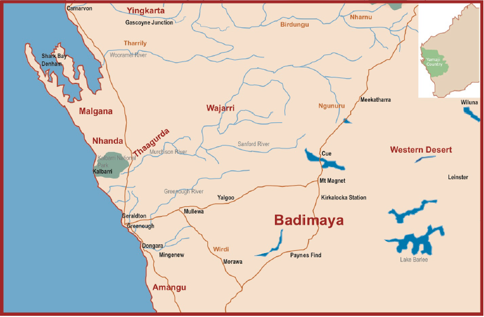

Badimaya is a Pama-Nyungan language, of the Kartu sub-group (Voegelin & Voegelin 1966: 128),
traditionally spoken across a large region spanning from Lake Moore, Nhingan Station and Paynes Find in the south, to
Mt Magnet, Wynyangoo Station and Kirkalocka Station in the north. Traditional Badimaya country is bordered by Western
Desert (Tjuparn, Wanmala) to the east, Noongar to the south-west, and Wajarri to the north-west (Bednall 2020: 3).
| 
|
| Badimaya and surrounding languages |
Badimaya is a critically endangered language, with very few speakers remaining. However, there are some
Badimaya people with a passive understanding of the language, and many frequently use certain Badimaya words and phrases in everyday
life. Alongside this, a passionate language revival movement is currently underway in the Badimaya community, with community
members actively involved in relearning and re-awakening their language (Bednall 2020: 3).
Badimaya is typologically fairly standard of many Western Australian Pama-Nyungan languages. It is a
suffixing language with fairly free word order and a split-ergative case marking system. Unlike neighbouring languages, it
doesn’t have a bound pronominal system. It is the most southerly Western Australian language to show evidence for inflectional
switch-reference marking (Bednall n.d.: 20).
There appear to have been at least two (unnamed) varieties of the language, displaying some lexical
and grammatical differences: a northern dialect and a southern dialect (Bednall 2020: 94).
Below is a list of key linguistic research that has been undertaken over the last half century:
- O’Grady, G. N., C. F. Voegelin & F. M. Voegelin. 1966. Languages of the world: Indo-Pacific casicle 6. Anthropological
Linguistics, 8(2).
- Kingsford, R. J. 1982. Yamadyi Law: The continuing significance of traditional Aboriginal culture in the
Murchison Region, WA. MA thesis, University of Western Australia.
- Dunn, Leone. 1982. Badimaya, a Western Australian language. MA thesis, University of Western Australia.
- Dunn, Leone. 1988. Badimaya, a Western Australian language. Papers in Australian Linguistics No.17: 19-149.
- Bednall, James. n.d. Lexical and morphosyntactic variation in Badimaya. Bundiyarra – Irra Wangga Language Centre,
Geraldton, Australia.
Archived language collections are available at:
- Bednall, James (collector) Badimaya language recordings, 2012-2014. [IRRA-WANGGA_08]. (64 audio files; 44 hrs).
Digital collection managed by AIATSIS.
http://aiatsis.gov.au/sites/default/files/catalogue_resources/irra-wangga_08_interim_finding_aid_1.pdf
Useful community-focused language resources are available from Bundiyarra Aboriginal Community Aboriginal Corporation:
- Benjamin, Joe. 2012. Joe Benjamin Stories: Story about the Mallee Hen. Irra Wangga Language Centre: Geraldton, Australia.
- Benjamin, Joe. 2012. Joe Benjamin Stories: The Porcupine Story. Irra Wangga Language Centre: Geraldton, Australia.
- Bednall, James (ed.) 2013. Bush Yarns from Mt Magnet Series: Ngalimi wadha marun.gu = looking for quandongs.
Bundiyarra - Irra Wangga Language Centre: Geraldton, Australia.
- Bednall, James (ed.) 2013. Bush Yarns from Mt Magnet Series: Ngalimi yan.guwa wadha bimbawu = looking for
bimba. Bundiyarra - Irra Wangga Language Centre: Geraldton, Australia.
- Bednall, James (ed.) 2013. Bush Yarns from Mt Magnet Series: Wandi guwiyarl yuga? = where is the goanna? Bundiyarra -
Irra Wangga Language Centre: Geraldton, Australia.
- Wagner, Johanna and James Bednall (eds.) 2013. Badimaya Seasonal Calendar. Combined Universities Centre for Rural
Health (CUCRH): Geraldton, Australia.
- Wagner, Johanna and James Bednall (eds.) 2013. On Badimaya Country. Combined Universities Centre for Rural Health
(CUCRH): Geraldton, Australia.
- Bednall, James (ed.) 2014. Badimaya Guwaga = Talking Badimaya: An Illustrated Wordlist of the Badimaya Language of
Western Australia. Bundiyarra - Irra Wangga Language Centre: Geraldton, Australia.
- George, Ollie. 2017. Nganang Badimaya Wangga: Yarns with Gami Ollie George. Bundiyarra - Irra Wangga Language
Centre: Geraldton, Australia.
- Bednall, James (compiler). 2020. Badimaya dictionary: An Aboriginal language of Western Australia (2nd ed.). (1st ed.
published 2014). Bundiyarra - Irra Wangga Language Centre: Geraldton, Australia.
Other useful websites relating to Badimaya language include:
Go Back